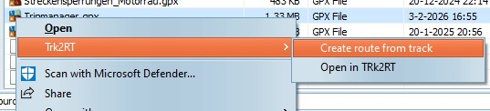
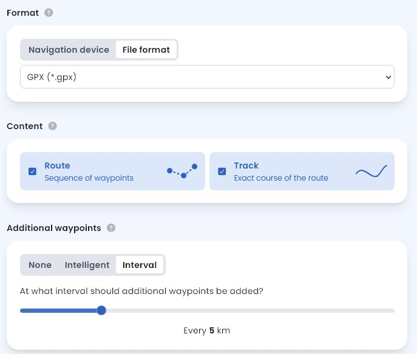
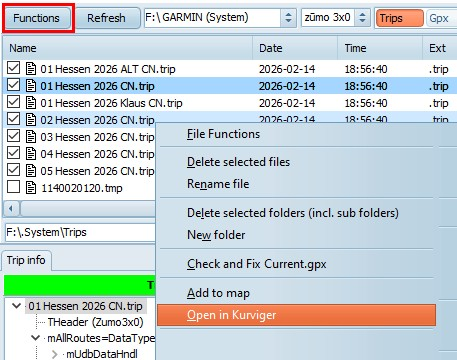
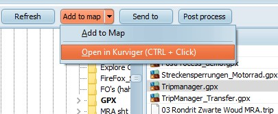

Trk2RT (Contributed Steve Follen)
The Tripmanager installer has the option to
install Trk2Rt.
When selected Trk2Rt will be added to the
context menu of Windows Explorer and TripManager. To access
that context menu right click on a GPX, or KML file.

Create route from track
This menu item will create a GPX with an
enhanced route from the selected file and save it in a sub
directory. The selected input file can contain a track and
optionally routes, or way points. The route will be created
with default options. To have more control over the process use
'Open in Trk2RT'.
Open in Trk2RT
This menu item will open the selected file in
the Trk2RT dialog, where all options are available.
Trip Editor
Trk2RT is also available in the Trip
Editor.
Click on the GPX button, next
Trt2Rt + Import.
After selecting a GPX, or KML, file a dialog
pops up where you need to select the Routes/Waypoints/Tracks to
import. The exportPercent parameter controls how many
Route points will be added. This effectively enables you
to create a Trip from a Track!
The topic Universal route demonstrates
a possible use case together with
MyRouteApp.
Kurviger is a full-blown route planner,
targeted at motorcycle usage. It has many useful features for
bikers. To get started with this tool you can start
here.
Exporting from Kurviger
With a route loaded click on the 3 dots, and
select Export.
The saved GPX can be used as-is in
TripManager, but beware that the device (Zumo) will always
recalculate, because Kurviger does not export the
<subclass>. It can embed 'Garmin route points', but in my
tests it will take longer to import, and there is no guarantee
that the recalculated will remain the same.
|
|
|

Here you have multiple options,
depending on your use-case. Generally for use with
TripManager it is recommended to use these
settings.
File format: GPX (*.gpx)
Content: Route + Track
Additional waypoints: None, or
if you want the route on the device to follow the planned
route closer Interval
|
Opening a trip or route in Kurviger
Selected trip files, or selected
GPX files containing routes, can be opened
directly in Kurviger from within TripManager. The files can be
on the device, or a windows folder. For every selected GPX file
a dialog pops up where you can select the routes.
|

From the device
First click on Functions, next
select Open in Kurviger
|
|

From Windows
Click on Add to map (small arrow), or
use the shortcut CTRL + Click
Multiple Trip, or GPX files can be
selected.
|
Setting the defaults.